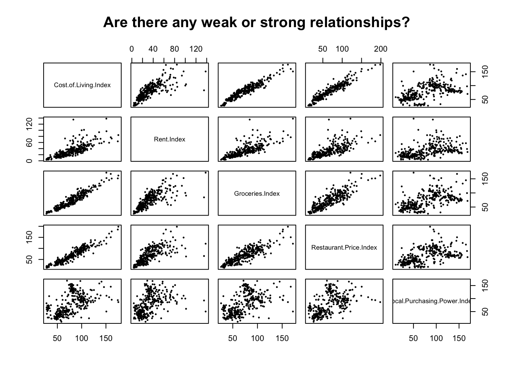
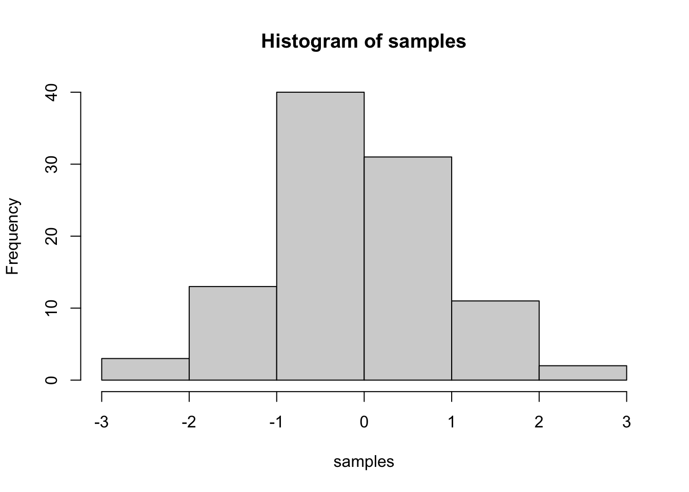

This is a course I took during my time at Baruch College. We will briefly go over correlation, linear regression, residuals, multiple regressions & time series analysis. I will provide examples for each topic with a question(s) and answer(s).
Last compiled: 2021-09-14
We will begin discussing about correlation. What is correlation? In short, correlation is linear association (relationship) between two quantitative (numerical) variables. It is important to know when we are allowed to use correlation. For this reason, we should really use correlation if we meet these three criterias:
How do we check the conditions? Simple, make a scatter plot!
I will begin by importing some data from the Numbeo website. More information will be provided later.
# import data
cost <- read.table( 'Cost_of_Living_2013.txt', sep='\t', header=TRUE) After we dump the dataset in R, it is a good to get familiar with the columns you’re dealing with. We can quickly glance at the data by reading the first rows.
# analyze a few observations
head(cost) # read first 6 rows## City Cost.of.Living.Index Rent.Index Groceries.Index
## 1 Stavanger, Norway 175.51 84.24 161.61
## 2 Trondheim, Norway 174.38 63.71 151.56
## 3 Oslo, Norway 161.84 72.96 150.99
## 4 Zurich, Switzerland 159.91 77.03 167.36
## 5 Bergen, Norway 156.54 59.20 145.49
## 6 Geneva, Switzerland 151.10 96.81 152.58
## Restaurant.Price.Index Local.Purchasing.Power.Index
## 1 198.24 86.42
## 2 185.35 93.89
## 3 176.62 95.51
## 4 150.42 145.55
## 5 167.02 105.33
## 6 149.08 110.94If we want to dive deeper into the dataset, we can call these functions to learn more.
# Let's learn more about the data model
str(cost) # structure of an r object## 'data.frame': 322 obs. of 6 variables:
## $ City : chr "Stavanger, Norway" "Trondheim, Norway" "Oslo, Norway" "Zurich, Switzerland" ...
## $ Cost.of.Living.Index : num 176 174 162 160 157 ...
## $ Rent.Index : num 84.2 63.7 73 77 59.2 ...
## $ Groceries.Index : num 162 152 151 167 145 ...
## $ Restaurant.Price.Index : num 198 185 177 150 167 ...
## $ Local.Purchasing.Power.Index: num 86.4 93.9 95.5 145.6 105.3 ...dim(cost) # cols and rows similar to shape in python## [1] 322 6typeof(cost) # type of dataset ## [1] "list"names(cost) # brings all variables/column names## [1] "City" "Cost.of.Living.Index"
## [3] "Rent.Index" "Groceries.Index"
## [5] "Restaurant.Price.Index" "Local.Purchasing.Power.Index"We can safely say that we are working with a list made of 322 rows and 6 variables. We have 5 numerical variables and one character (string) variable. Our dataset is relative small.
Now, we are asked to create a scatter plot between the Cost.of.Living.Index variable against all the variables. What I’d like to do is create a scatter plot of the entire dataframe.
# This is a great to visualize relationships when working with less than 6 variables.
# We are excluding the City variable since a character type and won't have correlation.
pairs(cost[,2:6], main="Are there any weak or strong relationships?", pch=16, cex=.5)
You can add more headers by adding more hashtags. These won’t be put into the table of contents
Here’s an even lower level header
2018 | 7 | 23 Last compiled: 2021-09-14
I’m writing this tutorial going from the top down. And, this is how it will be printed. So, notice the second post is second in the list. If you want your most recent post to be at the top, then make a new post starting at the top. If you want the oldest first, do, then keep adding to the bottom
So far this is just a blog where you can write in plain text and serve your writing to a webpage. One of the main purposes of this lab journal is to record your progress learning R. The reason I am asking you to use this process is because you can both make a website, and a lab journal, and learn R all in R-studio. This makes everything really convenient and in the sam place.
So, let’s say you are learning how to make a histogram in R. For example, maybe you want to sample 100 numbers from a normal distribution with mean = 0, and standard deviation =1, and then you want to plot a histogram. You can do this right here by using an r code block, like this:
samples <- rnorm(100, mean=0, sd=1)
hist(samples)
When you knit this R Markdown document, you will see that the histogram is printed to the page, along with the R code. This document can be set up to hide the R code in the webpage, just delete the comment (hashtag), from the cold folding option in the yaml header up top. For purposes of letting yourself see the code, and me see the code, best to keep it the way that it is. You learn all of these things and more can be customized in each R code block.
Use this lab journal to record what you do in R. This way I will be able to see what you are doing and help you along the way. You will also be creating a repository of all the things you do. You can make posts about everything. Learning specific things in R (project unrelated), and doing things for the project that we will discuss at the beginning of the Fall semester. You can get started now by fiddling around with googling things, and trying stuff out in R. I’ve placed some helpful starting links in the links page on this website
It’s hard to learn programming when you don’t have specific problems that you are trying to solve. Everything just seems abstract.
I wrote an introductory programming book that introduces R, and gives some concrete problems for you to solve.
To get the hang of journaling and solving the problems to learn programming, my suggestion is that you use this .Rmd file to solve the problems. It would look like this:
Do simple math with numbers, addition, subtraction, multiplication, division
1+2## [1] 32*5## [1] 105/3## [1] 1.666667(1+6+4)/5## [1] 2.2Put numbers into variables, do simple math on the variables
a<-1
b<-2
a+b## [1] 3d<-c(1,2,3)
e<-c(5,6,7)
d+e## [1] 6 8 10d*e## [1] 5 12 21d/e## [1] 0.2000000 0.3333333 0.4285714Write code that will place the numbers 1 to 100 separately into a variable using for loop. Then, again using the seq function.
# for loop solution
# i becomes the number 1 to 100 at each step of the loop
a <- length(100) # make empty variable, set length to 100
for (i in 1:100){
a[i] <-i #assigns the number in i, to the ith index of a
}
print(a)## [1] 1 2 3 4 5 6 7 8 9 10 11 12 13 14 15 16 17 18
## [19] 19 20 21 22 23 24 25 26 27 28 29 30 31 32 33 34 35 36
## [37] 37 38 39 40 41 42 43 44 45 46 47 48 49 50 51 52 53 54
## [55] 55 56 57 58 59 60 61 62 63 64 65 66 67 68 69 70 71 72
## [73] 73 74 75 76 77 78 79 80 81 82 83 84 85 86 87 88 89 90
## [91] 91 92 93 94 95 96 97 98 99 100# for loop solution #2
a<-c() #create empty variable using combine command
for (i in 1:100){
a<-c(a,i) # keeps combining a with itself and the new number in i
}
print(a)## [1] 1 2 3 4 5 6 7 8 9 10 11 12 13 14 15 16 17 18
## [19] 19 20 21 22 23 24 25 26 27 28 29 30 31 32 33 34 35 36
## [37] 37 38 39 40 41 42 43 44 45 46 47 48 49 50 51 52 53 54
## [55] 55 56 57 58 59 60 61 62 63 64 65 66 67 68 69 70 71 72
## [73] 73 74 75 76 77 78 79 80 81 82 83 84 85 86 87 88 89 90
## [91] 91 92 93 94 95 96 97 98 99 100# seq solution
a <- seq(1,100,1) # look up help for seq using ?seq() in console
print(a)## [1] 1 2 3 4 5 6 7 8 9 10 11 12 13 14 15 16 17 18
## [19] 19 20 21 22 23 24 25 26 27 28 29 30 31 32 33 34 35 36
## [37] 37 38 39 40 41 42 43 44 45 46 47 48 49 50 51 52 53 54
## [55] 55 56 57 58 59 60 61 62 63 64 65 66 67 68 69 70 71 72
## [73] 73 74 75 76 77 78 79 80 81 82 83 84 85 86 87 88 89 90
## [91] 91 92 93 94 95 96 97 98 99 100And keep going. Try to solve the problems with different scripts that provide the same solution. Good luck, Happy coding.